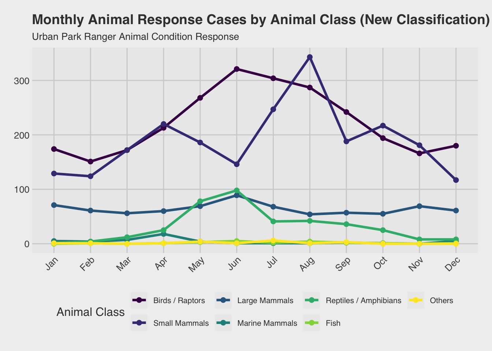
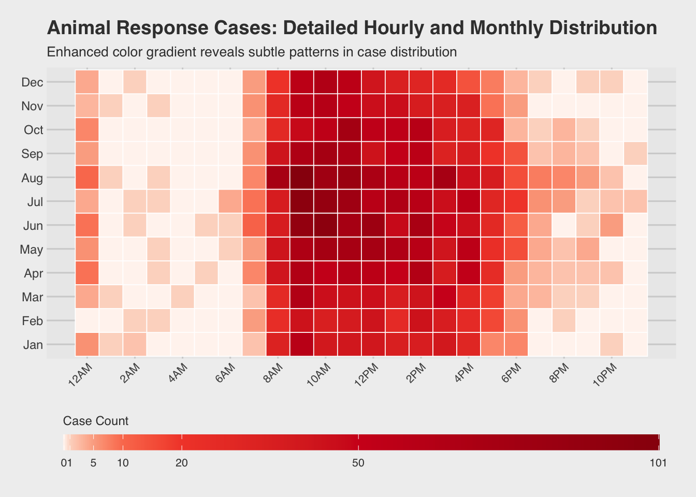
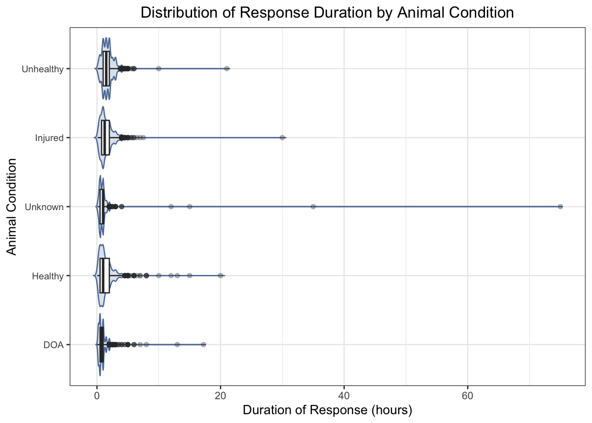
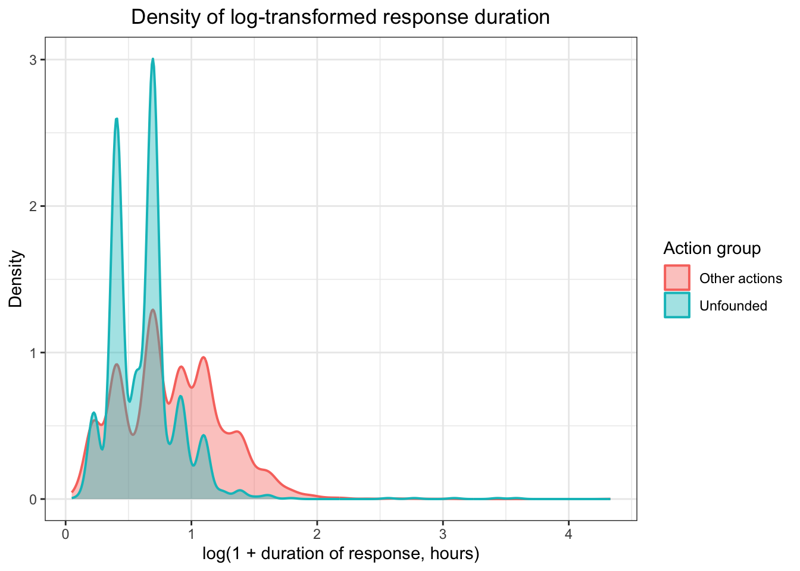
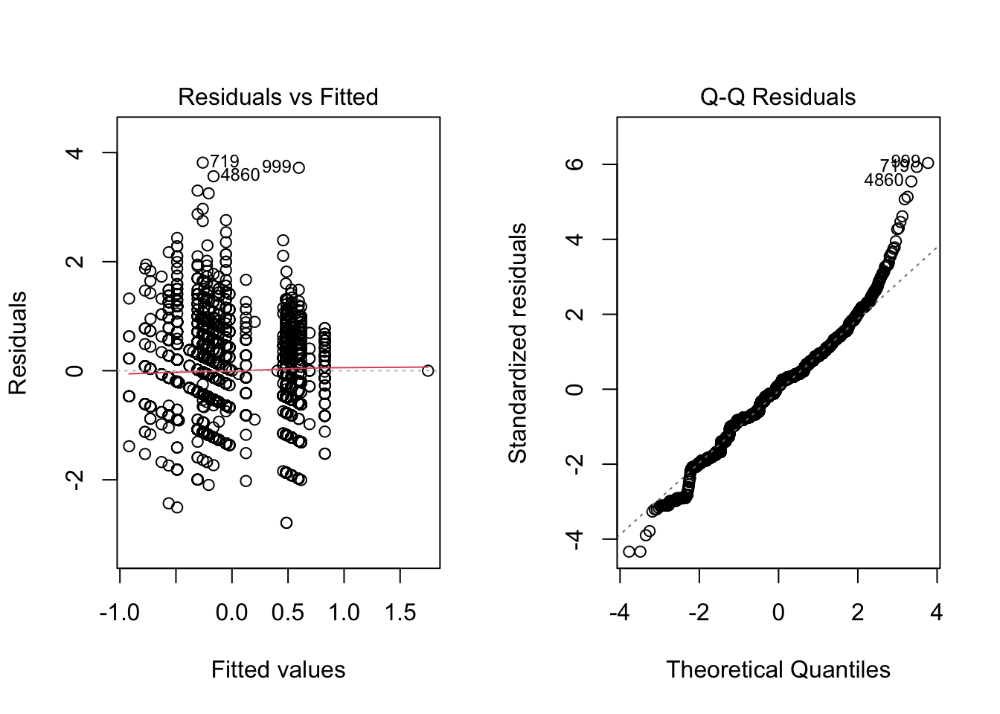

p8105_final_project
Xinwei Han (xh2601), Xinhui Lin (xl3054), Ruohan Lyu (rl3610), Xinyin Miao (xm2356), Fenglin Xie (fx2212)
2025-12-06
source("data_cleaning.R")## ── Attaching core tidyverse packages ──────────────────────── tidyverse 2.0.0 ──
## ✔ dplyr 1.1.4 ✔ readr 2.1.5
## ✔ forcats 1.0.1 ✔ stringr 1.5.2
## ✔ ggplot2 4.0.0 ✔ tibble 3.3.0
## ✔ lubridate 1.9.4 ✔ tidyr 1.3.1
## ✔ purrr 1.1.0
## ── Conflicts ────────────────────────────────────────── tidyverse_conflicts() ──
## ✖ dplyr::filter() masks stats::filter()
## ✖ dplyr::lag() masks stats::lag()
## ℹ Use the conflicted package (<http://conflicted.r-lib.org/>) to force all conflicts to become errors
##
## Attaching package: 'hms'
##
##
## The following object is masked from 'package:lubridate':
##
## hms
##
##
## Loading required package: viridisLite
##
##
## Attaching package: 'scales'
##
##
## The following object is masked from 'package:viridis':
##
## viridis_pal
##
##
## The following object is masked from 'package:purrr':
##
## discard
##
##
## The following object is masked from 'package:readr':
##
## col_factor
##
##
## Loading required package: Matrix
##
##
## Attaching package: 'Matrix'
##
##
## The following objects are masked from 'package:tidyr':
##
## expand, pack, unpack
##
##
## Loaded glmnet 4.1-10
##
## Rows: 6385 Columns: 22
## ── Column specification ────────────────────────────────────────────────────────
## Delimiter: ","
## chr (15): Date and Time of initial call, Date and time of Ranger response, B...
## dbl (3): Duration of Response, # of Animals, Hours spent monitoring
## lgl (4): PEP Response, Animal Monitored, Police Response, ESU Response
##
## ℹ Use `spec()` to retrieve the full column specification for this data.
## ℹ Specify the column types or set `show_col_types = FALSE` to quiet this message.
## Rows: 2054 Columns: 34
## ── Column specification ────────────────────────────────────────────────────────
## Delimiter: ","
## chr (22): ACQUISITIONDATE, ADDRESS, BOROUGH, CLASS, COUNCILDISTRICT, DEPARTM...
## dbl (1): PRECINCT
## num (7): ACRES, COMMUNITYBOARD, GISOBJID, NYS_ASSEMBLY, NYS_SENATE, OBJECTI...
## lgl (4): PERMIT, PIP_RATABLE, RETIRED, WATERFRONT
##
## ℹ Use `spec()` to retrieve the full column specification for this data.
## ℹ Specify the column types or set `show_col_types = FALSE` to quiet this message.
## Rows: 703 Columns: 4
## ── Column specification ────────────────────────────────────────────────────────
## Delimiter: ","
## chr (3): original_park, matched_park, final_match
## dbl (1): similarity
##
## ℹ Use `spec()` to retrieve the full column specification for this data.
## ℹ Specify the column types or set `show_col_types = FALSE` to quiet this message.TASK 1: Monthly trends by animal class using the new classification
monthly_animal_trends = park_ranger_new |>
mutate(
call_month = month(date_and_time_of_initial_call, label = TRUE, abbr = TRUE)
) |>
group_by(call_month, animal_class_new) |>
summarise(case_count = n(), .groups = "drop") |>
# Ensure all months are represented for each animal class
complete(call_month, animal_class_new, fill = list(case_count = 0))Plot 1: Monthly trends by animal class (new classification)
mon_case_plot = monthly_animal_trends |>
ggplot(aes(x = call_month, y = case_count, group = animal_class_new, color = animal_class_new)) +
geom_line(linewidth = 1.2) +
geom_point(size = 2) +
scale_y_continuous(breaks = pretty_breaks()) +
labs(
title = "Monthly Animal Response Cases by Animal Class (New Classification)",
subtitle = "Urban Park Ranger Animal Condition Response",
x = "Month",
y = "Number of Cases",
color = "Animal Class"
) +
theme_fivethirtyeight() +
theme(
axis.text.x = element_text(angle = 45, hjust = 1),
legend.position = "bottom",
plot.title = element_text(face = "bold", size = 14),
plot.subtitle = element_text(size = 10),
legend.text = element_text(size = 8)
) +
scale_color_viridis_d()
print(mon_case_plot)
Chart Interpretation:
This line chart displays the monthly distribution of animal response cases across 7 reclassified animal categories throughout the year.
Key Findings:
Birds and raptors demonstrate a notable increase in cases beginning in February, reaching a peak in June, and declining to their lowest levels by November, possibly reflecting migratory patterns, nesting seasons, and reduced activity during colder months.
Small mammals exhibit three distinct peaks in case numbers during April, August, and October, which may suggest potential associations with breeding cycles, seasonal resource availability, or periodic human-wildlife interactions in urban environments.
Large mammals maintain relatively consistent case numbers between 70 and 80 throughout the year, indicating potentially stable population dynamics or continuous human encounters despite seasonal variations.
Reptiles and amphibians show generally low and stable case numbers with a moderate peak around 100 in June, which might be linked to temperature-dependent activity patterns and increased visibility during warmer conditions.
Marine mammals and other categories remain consistently minimal with case counts in the single digits, possibly due to their limited presence in urban park ecosystems or lower detection rates.
TASK 2: Heatmap of cases by month and hour (using cleaned data)
hourly_monthly_heatmap = park_ranger_new |>
mutate(
call_month = month(date_and_time_of_initial_call, label = TRUE, abbr = TRUE),
call_hour = hour(date_and_time_of_initial_call)
) |>
filter(!is.na(call_month) & !is.na(call_hour)) |>
group_by(call_month, call_hour) |>
summarise(case_count = n(), .groups = "drop") |>
complete(call_month, call_hour, fill = list(case_count = 0))Create custom color gradient with more detailed breaks
max_cases = max(hourly_monthly_heatmap$case_count)
color_breaks = c(0, 1, 5, 10, 20, 50, max_cases)Define red color palette
red_palette = colorRampPalette(c("#FFF5F0", "#FEE0D2", "#FCBBA1", "#FC9272", "#FB6A4A", "#EF3B2C", "#CB181D", "#99000D"))(length(color_breaks))Plot 2: Heatmap of cases by month and hour
case_heatmap = hourly_monthly_heatmap |>
ggplot(aes(x = call_hour, y = call_month, fill = case_count)) +
geom_tile(color = "white", linewidth = 0.3) +
scale_fill_gradientn(
name = "Case Count",
colors = red_palette,
values = rescale(color_breaks),
breaks = color_breaks,
guide = guide_colorbar(
barwidth = 30,
barheight = 0.8,
direction = "horizontal",
title.position = "top"
)
) +
scale_x_continuous(
breaks = seq(0, 23, by = 2),
labels = c("12AM", "2AM", "4AM", "6AM", "8AM", "10AM",
"12PM", "2PM", "4PM", "6PM", "8PM", "10PM")
) +
labs(
title = "Animal Response Cases: Detailed Hourly and Monthly Distribution",
subtitle = "Enhanced color gradient reveals subtle patterns in case distribution",
x = "Hour of Day",
y = "Month"
) +
theme_fivethirtyeight() +
theme(
axis.text.x = element_text(angle = 45, hjust = 1, size = 8),
axis.text.y = element_text(size = 9),
plot.title = element_text(face = "bold", size = 14),
plot.subtitle = element_text(size = 10),
legend.position = "bottom",
legend.title = element_text(size = 9),
legend.text = element_text(size = 8)
)
plot(case_heatmap)
Time-Month Heatmap Analysis:
Case distribution primarily concentrates between 8:00 and 18:00, aligning with peak park visitation and diurnal animal activity. Summer exhibits extended evening activity likely due to increased daylight and recreational use, while winter shows contracted midday patterns corresponding to reduced daylight availability. Minimal overnight reporting may reflect limited detection capabilities during low-human-activity periods.
Human Intervention Recommendations:
Enhanced ranger coverage during summer afternoons could address elevated case frequencies across multiple species. Early spring public education initiatives might mitigate conflicts by raising awareness of seasonal animal behaviors. Rescue organizations should anticipate increased warm-weather intake while utilizing winter for strategic planning. Visitor vigilance during peak seasons and prompt daylight reporting could improve response effectiveness, supplemented by community monitoring programs and coordinated rehabilitation networks.
TASK 7
park_model = park_ranger_new |>
rename(num_animals = matches("animals")) |>
mutate(
duration_hours = as.numeric(duration_of_action),
num_animals = as.numeric(num_animals),
final_ranger_action = as.factor(final_ranger_action),
animal_condition = as.factor(animal_condition)
) |>
filter(
!is.na(duration_hours),
duration_hours > 0,
!is.na(final_ranger_action),
!is.na(animal_condition),
!is.na(num_animals),
num_animals >= 0
)Relationship Between Response Duration and Final Ranger Action
action_order <- park_model |>
group_by(final_ranger_action) |>
summarise(med = median(duration_hours, na.rm = TRUE)) |>
arrange(med) |>
pull(final_ranger_action)
park_model2 <- park_model |>
mutate(final_ranger_action = factor(final_ranger_action, levels = action_order))
ggplot(park_model2, aes(x = final_ranger_action, y = duration_hours)) +
# Violin plot
geom_violin(trim = FALSE, fill = "#BFCDE0", color = "#5D7CA6", alpha = 0.5, scale = "width") +
# Boxplot
geom_boxplot(width = 0.5, fill = "white", outlier.alpha = 0.3) +
coord_flip() +
labs(
title = "Distribution of Response Duration by Final Ranger Action",
x = "Final Ranger Action (sorted by median duration)",
y = "Duration of Response (hours)"
) +
theme_bw() +
theme(
plot.title = element_text(hjust = 0.5),
axis.text.y = element_text(size = 8)
)
Chart Interpretation:
The combined violin-and-boxplot visualization provides insight into how long Urban Park Rangers spend responding to different types of animal-related incidents.
- Actions Involving Rehabilitation Have the Longest Response Durations
Final actions such as “Released back into Park after Rehabilitation” and “Rehabilitator” show the highest median response durations, as well as the widest spread of times.
These actions often require: on-site assessment, coordination with licensed wildlife rehabilitators, transport of animals, or extended monitoring before the animal can be safely released.
As a result, longer rescue times are expected. The long right-tails in these distributions reflect occasional cases that require many hours of handling or follow-up visits.
- Administrative or Low-Intervention Actions Are Generally Short
Actions such as: “Advised/Educated others”, “Submitted for DEC Testing”, “Relocated/Condition Corrected”, “Monitored Animal” show much shorter median durations.
These categories often represent cases where: the ranger provides guidance to the public, conducts a quick field assessment, performs minor relocation, or verifies that an animal is behaving normally.
Because they involve limited physical intervention, these responses tend to be resolved quickly, reflected in the tight, compact violins and small IQRs.
- “Unfounded” and “ACC” Responses Show High Variability
ACC (Animal Care Center Transfer): While the median duration is moderate, the long right tail indicates that some cases require significant time—often due to: waiting for ACC personnel to arrive, multi-agency coordination, or handling distressed or dangerous animals.
Unfounded: Although typically short, several cases show unusually long durations. These may correspond to: extended attempts to locate an animal that was ultimately not found, misreported incidents requiring prolonged investigation, or delays in confirming that no intervention was needed.
- Outliers Reflect a Small Number of Long-Duration Incidents
Across multiple actions—especially ACC, Unfounded, and Rehabilitator—there are visible outliers extending to 30+ hours. These are likely: long-term monitoring cases, situations requiring multiple returns to the site, or logistical delays in handing off animals to rehabilitation partners.
Relationship Between Animal Condition and Response Duration
park_model <- park_ranger_new |>
rename(num_animals = matches("animals")) |>
mutate(
duration_hours = as.numeric(duration_of_action),
num_animals = as.numeric(num_animals),
animal_condition = as.character(animal_condition),
animal_condition = ifelse(animal_condition == "N/A", "Unknown", animal_condition),
final_ranger_action = as.factor(final_ranger_action),
animal_condition = as.factor(animal_condition)
) |>
filter(
!is.na(duration_hours),
duration_hours > 0,
!is.na(final_ranger_action),
!is.na(animal_condition),
!is.na(num_animals),
num_animals >= 0
)
park_model2 <- park_model |>
mutate(
animal_condition = fct_reorder(
animal_condition,
duration_hours,
.fun = median,
na.rm = TRUE))
ggplot(park_model2, aes(x = animal_condition, y = duration_hours)) +
# Violin layer
geom_violin(trim = FALSE, fill = "#BFCDE0", color = "#5D7CA6",
alpha = 0.5, scale = "width") +
# Boxplot layer
geom_boxplot(width = 0.5, fill = "white", outlier.alpha = 0.3) +
coord_flip() +
labs(
title = "Distribution of Response Duration by Animal Condition",
x = "Animal Condition",
y = "Duration of Response (hours)"
) +
theme_bw() +
theme(
plot.title = element_text(hjust = 0.5),
axis.text.y = element_text(size = 8)
)
The violin-and-boxplot visualization shows how response time varies across different animal conditions.
- Unhealthy and Injured Animals Tend to Receive Longer Responses
The Unhealthy and Injured categories show slightly higher median response durations and wider distributions.
This pattern is expected because these cases usually require detailed on-site assessment, safe handling of distressed animals, and possibly coordination with rehabilitation partners.
- Healthy Animals Show Shorter and More Consistent Response Times
The Healthy category has a shorter median response duration and a narrower distribution. Healthy animals often require quick verification that no intervention is needed, or simple relocation or observation.
- Unknown Conditions Have High Variability
The Unknown group displays substantial variation, including several long-duration outliers. These likely reflect situations where limited information during the call required extended investigation, or the ranger spent additional time determining whether intervention was necessary.
- DOA Cases Involve Minimal Handling but Occasionally Long Investigations
The DOA (Dead on Arrival) category generally shows short median durations, consistent with the limited intervention required. However, some notable long-duration outliers appear—possibly tied to: coordinating with external agencies (e.g., ACC), species identification procedures, or waiting for specialized disposal assistance.
Density of Response Duration by Action Group
park_model2 = park_model |>
mutate(
action_group = if_else(
final_ranger_action == "Unfounded",
"Unfounded",
"Other actions"
)
)duration_mean = park_model2 |>
group_by(action_group) |>
summarise(
mean_duration = mean(duration_hours, na.rm = TRUE),
.groups = "drop"
)
duration_mean## # A tibble: 2 × 2
## action_group mean_duration
## <chr> <dbl>
## 1 Other actions 1.54
## 2 Unfounded 0.995Density Plot
ggplot(park_model2, aes(x = duration_hours,
fill = action_group,
color = action_group)) +
geom_density(alpha = 0.3, adjust = 1, linewidth = 1) +
geom_vline(data = duration_mean,
aes(xintercept = mean_duration, color = action_group),
linewidth = 1.2) +
labs(
title = "Density of response duration by action group",
x = "Duration of response (hours)",
y = "Density",
fill = "Action group",
color = "Action group"
) +
theme_bw() +
theme(
plot.title = element_text(hjust = 0.5)
)
The first density plot shows that the distribution of raw response duration is extremely right-skewed, with most incidents resolved within a short time but a small number taking many hours. This heavy skew makes it difficult to visually compare “Unfounded” cases with all other ranger actions on the original scale because the long tail compresses the main density near zero.
Density Plot (log-transformed)
park_model2_log = park_model2 |>
filter(duration_hours > 0) |>
mutate(duration_log = log1p(duration_hours)) # log(1 + x)
ggplot(park_model2_log,
aes(x = duration_log, fill = action_group, color = action_group)) +
geom_density(alpha = 0.4, adjust = 1, linewidth = 0.7) +
labs(
title = "Density of log-transformed response duration",
x = "log(1 + duration of response, hours)",
y = "Density",
fill = "Action group",
color = "Action group"
) +
theme_bw() +
theme(
plot.title = element_text(hjust = 0.5)
)
To address this issue, we applied a log-transformation, using log(1 + duration).
This transformation compresses long-duration outliers and spreads out the dense mass near zero, making group differences more interpretable and improving visualization.
Comparison Between Unfounded and Other Actions:
- Unfounded cases
Display a higher density at lower log-duration values, indicating that these calls are typically resolved very quickly.
The mean duration of unfounded responses is approximately 1.0 hour, confirming their shorter nature.
- Other actions
Show a broader distribution with higher density at larger log-duration values, meaning that these incidents often require more time for assessment, handling, or coordination.
Their mean duration is significantly higher at 1.52 hours.
Statistic: ANOVA Models for Response Duration
ANOVA on Raw Duration
anova_fit = aov(
duration_hours ~ final_ranger_action * animal_condition + num_animals,
data = park_model
)
summary(anova_fit)## Df Sum Sq Mean Sq F value Pr(>F)
## final_ranger_action 7 1519 216.94 97.825 <2e-16 ***
## animal_condition 4 6 1.57 0.706 0.588
## num_animals 1 4 4.27 1.924 0.165
## final_ranger_action:animal_condition 24 492 20.51 9.249 <2e-16 ***
## Residuals 6127 13588 2.22
## ---
## Signif. codes: 0 '***' 0.001 '**' 0.01 '*' 0.05 '.' 0.1 ' ' 1The original ANOVA model: duration_hours ~ final_ranger_action * animal_condition + num_animals
It shows:
Final ranger action is highly significant (p < 2e-16), indicating strong differences in response duration across action types.
Animal condition is not significant (p = 0.46) in the raw model.
Number of animals has no effect (p = 0.80).
The interaction between final action and condition is significant (p = 0.000165), suggesting that the effect of action type depends on the condition of the animal.
Log-Transformed ANOVA
park_model2 = park_model |>
filter(duration_hours > 0) |>
mutate(log_duration = log(duration_hours))
anova_fit_log = aov(
log_duration ~ final_ranger_action * animal_condition + num_animals,
data = park_model2
)
summary(anova_fit_log)## Df Sum Sq Mean Sq F value Pr(>F)
## final_ranger_action 7 1037.5 148.22 357.609 < 2e-16 ***
## animal_condition 4 7.9 1.96 4.736 0.000816 ***
## num_animals 1 0.6 0.65 1.564 0.211132
## final_ranger_action:animal_condition 24 29.1 1.21 2.924 2.27e-06 ***
## Residuals 6127 2539.5 0.41
## ---
## Signif. codes: 0 '***' 0.001 '**' 0.01 '*' 0.05 '.' 0.1 ' ' 1par(mfrow = c(1, 2))
plot(anova_fit_log, which = 1) # Residuals vs Fitted
plot(anova_fit_log, which = 2) # Normal Q-Q## Warning: not plotting observations with leverage one:
## 4660, 5064
par(mfrow = c(1, 1))Because response duration is highly right-skewed with many long-tail outliers, ANOVA assumptions were violated when using raw duration values. This motivated the use of a log-transformation to stabilize variance and improve normality of residuals.
Model: log_duration ~ final_ranger_action * animal_condition + num_animals
The results:
Final ranger action remains highly significant (p < 2e-16), confirming strong differences in rescue duration across action types even after transformation.
Animal condition becomes significant (p = 0.000416), suggesting that after correcting skewness and long tails, condition differences emerge more clearly.
Number of animals remains non-significant (p = 0.27).
Interaction term remains significant (p = 7.3e-07), indicating that the influence of action types varies across conditions.
The log-transformation compresses extreme high-duration responses and spreads out low values, resulting in more homogeneous variance across fitted values , more normal residual distribution, clearer signal for predictors previously overshadowed by extreme right-skewed values.
This is evident in the diagnostics:
Residuals vs fitted plot shows more stable variance.
Q–Q plot is much closer to the reference line, though long-tail deviations still exist (expected with field-based rescue data).
Task 8: Final Ranger Actions by Animal Condition
park_model4 <- park_model |>
filter(!is.na(animal_condition)) |>
filter(animal_condition %in% c("Healthy", "Unhealthy", "Injured", "DOA"))plot_condition_bar <- function(data, cond, ymax) {
df <- data |>
filter(animal_condition == cond) |>
count(final_ranger_action) |>
arrange(n)
df$final_ranger_action <- factor(df$final_ranger_action,
levels = df$final_ranger_action)
ggplot(df, aes(x = final_ranger_action, y = n)) +
geom_col(fill = "#4F81BD", alpha = 0.85) +
coord_flip() +
scale_y_continuous(limits = c(0, ymax),
expand = expansion(mult = c(0, 0.05))) +
labs(
title = paste("Final Ranger Action for", cond),
x = "Final Ranger Action",
y = "Number of Cases") +
theme_bw() +
theme(
plot.title = element_text(hjust = 0.5),
axis.text.y = element_text(size = 8))
}
max_cases <- park_model4 |>
count(animal_condition, final_ranger_action) |>
pull(n) |>
max()
p1 <- plot_condition_bar(park_model4, "Healthy", max_cases)
p2 <- plot_condition_bar(park_model4, "Unhealthy", max_cases)
p3 <- plot_condition_bar(park_model4, "Injured", max_cases)
p4 <- plot_condition_bar(park_model4, "DOA", max_cases)
(p1 | p2) /
(p3 | p4)
The four-panel visualization compares how ranger actions differ depending on the animal’s condition at the time of the call.
- Healthy Animals
For Healthy animals, the most common actions are: relocated / condition corrected, ACC.
These results suggest that many healthy animals were either moved from unsafe locations or transferred to the Animal Care Center for further evaluation. Lower-frequency actions (e.g., rehabilitation) reflect that healthy animals rarely require intensive care.
- Unhealthy Animals
In the Unhealthy group, ACC overwhelmingly dominates as the most frequent action, followed by Rehabilitator.
Because unhealthy animals typically need medical evaluation or long-term care, leading to high ACC involvement. Minimal counts in actions like “Submitted for DEC Testing” or “Relocated” indicate that relocation alone is usually insufficient for visibly unhealthy cases.
- Injured Animals
For Injured animals, the dominant actions are rehabilitator, unfounded, ACC.
Injured animals frequently require hands-on treatment or rehabilitation. The relatively high number of “Unfounded” cases likely reflects situations where the animal could not be located or its condition improved by the time the ranger arrived.
- DOA Animals
Among DOA cases, the most common action is relocated / condition corrected.
This is because dead wildlife generally require removal from public spaces rather than medical intervention. The presence of some actions like ACC transfer or DEC Testing reflects cases where the animal needed identification or documentation before final handling.